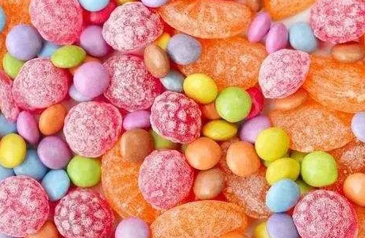
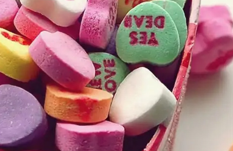

-

糖果的好处
但营养师家同时认为，从人体的生理需求出发，适量补充糖食，对健康是有益的，关键是科学地掌握”适量“这个度。
营养学家认为，每人每天吃精致糖60克，即全年22公斤左右比较科学，而居住在高原地区的人及运动员等消耗能量大者，食糖量还可适量增加，但也不宜超过太多，至于老年人，则应适当减少吃糖量。事实还证明，糖分摄取的减少，反而会造成多种危害。
-

糖果的坏处
糖果的危害包括诱发糖尿病、皮肤疾病以及导致肝脏和肾功能受损等。适量吃糖是正确的，但不可以过量吃糖。糖果是糖果糕点的一种，指以糖类为主要成分的一种小吃。
糖果更非龋齿的始作俑者，人们认为常吃糖容易导致龋齿，是因为糖长期存在于口腔中，可以成为引起龋齿的细菌培养基地。
@甜心糖果
svtcc.students